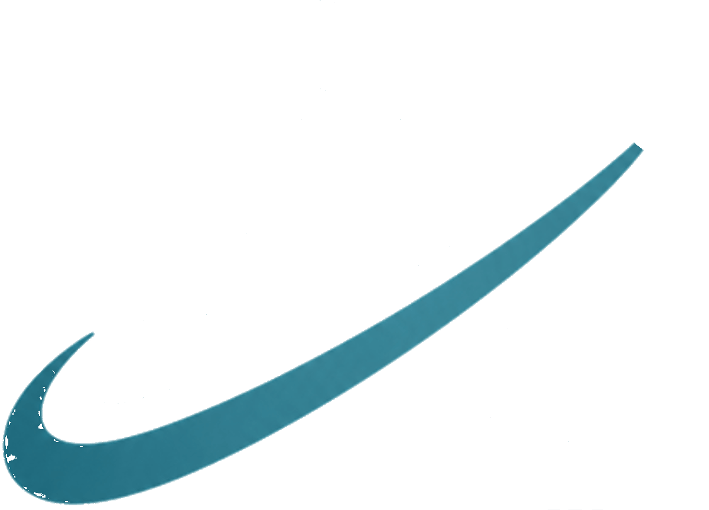

Beyond the obvious.
Toward what’s next.
We explore ideas worth pursuing, rethink complex problems, and turn possibilities into solutions designed to move things forward.
Understand first.
Build better.
We don't create solutions for problems that don't exist. We study real needs, understand the complexity behind them, and build thoughtful products that make the answer feel obvious.
From functionality to experience, every detail is designed with the user in mind.

Discover what’s taking shape.
Our portfolio is only the beginning, a growing collection of ideas, each explored, refined, and built around a real opportunity to make a difference.
Nutrition, training, health data and community — one place to manage your health.
Visit Centium →The next venture in the Atraxia portfolio is already in the works.
Founders
Abdallah Diab and Dr. Karim El Khaldi are both passionate about healthcare and fitness, as well as building companies and solutions that matter.

Abdallah Diab
«الحاجة أم الاختراع» — أفلاطون
A firm believer in simplifying complexity, removing obstacles, and bringing clarity to chaos. I strive to create organized, intuitive solutions that feel effortless to understand from the very first interaction.

Dr. Karim El Khaldi
“The mind is that which is roused and directed by itself.” —Marcus Aurelius
I believe the lessons of medicine are simple: be rigorous, stay passionate, and create solutions where none yet exist.
Three principles, one way of thinking.
Curiosity may drive us forward, but these values keep us grounded in how we think, build, and serve.
Principled
We only put our name behind what we genuinely believe in. Commercial opportunity will never outweigh our principles or the value we aim to create.
Client-Centric
Our clients sit at the heart of every decision. We listen, understand, and build around their needs, creating value without compromising what we stand for.
Simplicity
Our job is to make things easier. We absorb the complexity, remove the unnecessary, and turn difficult problems into experiences that feel simple.
Thoughts on what's next
A space for the thinking behind our work, what we're learning, what we're questioning, and what we're discovering along the way.
Contact Atraxia
Questions about the company, partnerships, press, or our ventures and what's on the horizon.